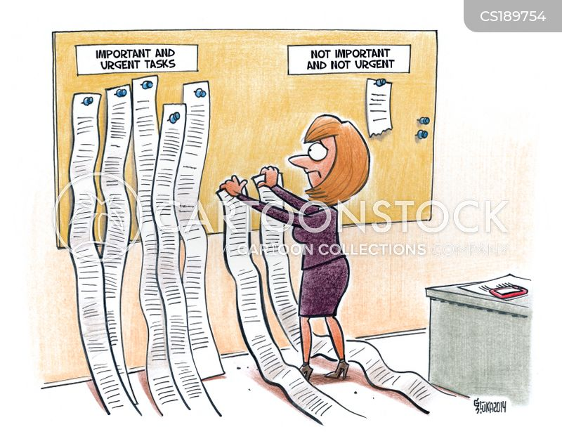
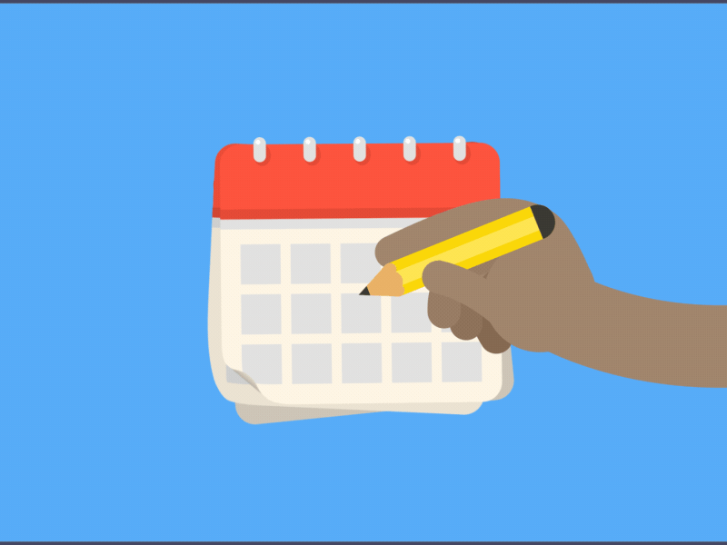

ABOUT PAGE - TRACK BUDDY
Hey everyone, This is team Track Buddy!. Every Now and then, we should have encountered situations where we faced minute problems, sometimes major problems when we forget something to do. This may affect our entire day. In some cases, we may not even be able to categorize the things that are important and urgent from the things that are not important and not urgent. And a few times in some cases when we are quite busy we may even forget an anniversary or our friend's Birthday or important meetings that are scheduled. All of the above things we mentioned were faced by us now and then. And to avoid such kinds of situations and not get into trouble, we need to arrange in other words organize our days and schedules, and maintaining a to-do list also prevents us from getting into trouble. And if you are searching for a buddy to look after all this kind of stuff, we the Track Buddy team are here for your service.
So Brace yourselves while we take you through the world of Track Buddy
INTRODUCTION
As discussed in the above section, Track Buddy helps you in organizing and keep a track of your activities. The features of this website allow you to keep up with your schedule and improve your activity. And in case if you want to start any new habit in your daily routine or if you want to keep track of a regular activity that you do and even if you want to organize an unofficial meeting with your buddies or colleagues or even if you have a habit of noting down the things you want to do and categorizing them based on your requirement and etc. Track Buddy will be of so much use to you and you are on the right path. The following are the features provided by Track Buddy.
Now let's dive into the features of Track Buddy..
FEATURES OF TRACK BUDDY
TO DO LIST
Every one of us at some point will maintain a to-do list, which is a list of things that are to be done and strike-off the things that are done. But if you don't want your time to be wasted by keeping on writing them and striking them of why don't you automate the whole thing, this will also save pages from being wasted. If you also think of the same thing then you are at the right place. Track Buddy helps you maintain a to-do list and keep track of the things are to be taken care of and the things that are done and the things that are to be done. We can even categorize them into the things that are urgent and not urgent if we want to.
DAILY PLANNER
Our daily planner helps you schedule your plans so that you have a perfect schedule and your works can't get overlapped one over the other causing a disturbance in your day. You can stay organized. And also using our daily planner you can scedule meetings and block their calanders too sending them a reminder a certain time ahead of the meeting.
PROGRESS TRACKER
If your on your way to achieve your goals then you should make sure that you don't miss your daily streak of doing that particular activity and Track Buddy helps you maintain that streak. You can set your goal and any number of days that you want to do it or practice it. Our progress tracker will send you a reminder every day asking you to perform the activity and in that way you can get used to whatever you do and keep track of the things you learn and get closer to your goals.
THIS IS ALL ABOUT TRACK BUDDY. WITH THE HELP OF TRACK BUDDY YOU CAN KEEP YOUR LIFE ORGANIZED AND GET A CLARITY ABOUT CERTAIN THINGS AND MAKING IT CLEAR TO YOUR MIND WHAT TO DO AND WHAT NOT TO DO. THIS WILL DEFINITELY HELP YOU IMPROVE YOUR PERFORMANCE IN THE TASKS YOU DO AND WILL BE A SUPPORTING PARTNER FOR YOU IN YOUR JOURNEY OF ACHIEVING YOUR GOALS!.